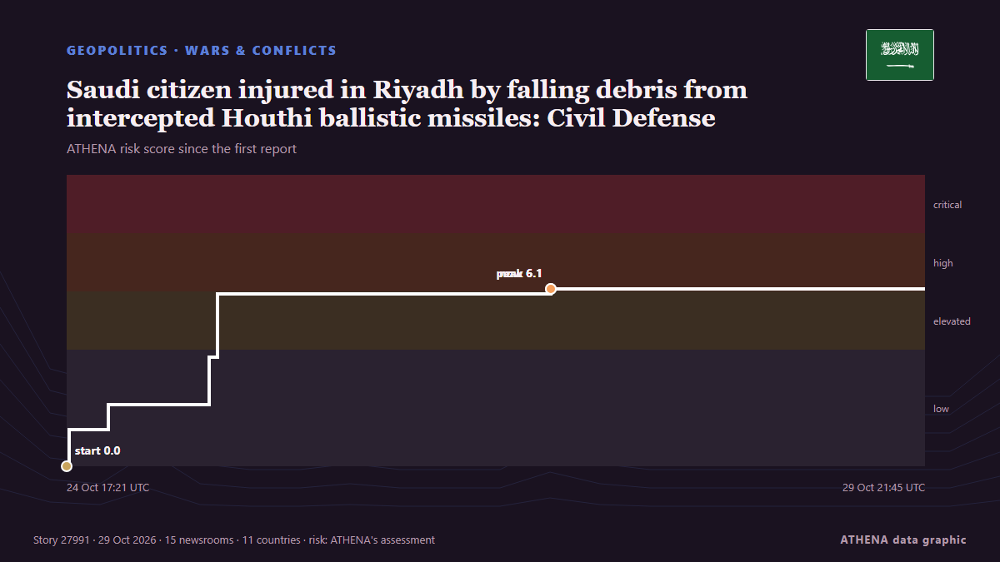

Saudi citizen injured in Riyadh by falling debris from intercepted Houthi ballistic missiles: Civil Defense

Authorities say fragments from 2 intercepted missiles damaged home and vehicle. von Anadolu Agency (English)
Unabhängig gemeldet von 15 Medien in 11 Ländern seit dem 24. Okt., zuerst von Middle East Eye; die Berichterstattung flaut ab. ATHENA stuft das Risiko als erhöht ein (5.7/10), vor allem wegen der Schwere des beschriebenen Schadens und seiner geografischen und sektoralen Reichweite. Die Konfidenz liegt bei 88 % (hoch): 15 Medien bestätigen es unabhängig, bei einer mittleren Verlässlichkeit der Quellen von 78 %. Medien nach Land: Saudi-Arabien (7), Kuwait (3), Vereinigte Arabische Emirate (3). Berichterstattung: 24. Okt. bis 29. Okt., 124 Stunden.
Warum es wichtig ist: Das Rote Meer und die Meerenge Bab al-Mandab sind der kürzeste Seeweg zwischen Asien und Europa durch den Suezkanal. Angriffe auf Handelsschiffe zwingen Reedereien um Afrika herum – mit mehr Zeit und Kosten für den Welthandel.
Was sich geändert hat: 3 neue Berichte von 3 Redaktionen in den 24 Stunden bis 29. Okt..
Erste Schlagzeile: Debris from intercepted Houthi missiles injures 2 in Saudi Arabia’s Khamis Mushait, Ahad Rafidah
Schlagzeilen werden auf Englisch angezeigt, wie veröffentlicht.
Auf einen Blick
Ausgewählt, bewertet und geschrieben nach der veröffentlichten Methodik von ATHENA. Kein Redakteur greift in einzelne Ereignisse ein. So entsteht ATHENA ›
| 24 Oct 17:19 UTC | 9 |
|---|---|
| 24 Oct 23:19 UTC | 2 |
| 25 Oct 05:19 UTC | 1 |
| 25 Oct 11:19 UTC | 9 |
| 25 Oct 17:19 UTC | 1 |
| 25 Oct 23:19 UTC | 0 |
| 26 Oct 05:19 UTC | 0 |
| 26 Oct 11:19 UTC | 1 |
| 26 Oct 17:19 UTC | 0 |
| 26 Oct 23:19 UTC | 0 |
| 27 Oct 05:19 UTC | 0 |
| 27 Oct 11:19 UTC | 4 |
| 27 Oct 17:19 UTC | 1 |
| 27 Oct 23:19 UTC | 0 |
| 28 Oct 05:19 UTC | 0 |
| 28 Oct 11:19 UTC | 0 |
| 28 Oct 17:19 UTC | 0 |
| 28 Oct 23:19 UTC | 0 |
| 29 Oct 05:19 UTC | 0 |
| 29 Oct 11:19 UTC | 0 |
| 29 Oct 17:19 UTC | 3 |
| 24 Oct 17:21 UTC | 0.0 |
|---|---|
| 24 Oct 17:41 UTC | 1.3 |
| 24 Oct 23:26 UTC | 2.1 |
| 25 Oct 13:57 UTC | 2.8 |
| 25 Oct 14:02 UTC | 3.7 |
| 25 Oct 15:14 UTC | 5.9 |
| 27 Oct 15:34 UTC | 6.1 |
| 29 Oct 21:45 UTC | 5.7 |
Warum diese Zahlen
Bedeutung
Risiko
Konfidenz
Die Berichterstattung – wer berichtete, und wann
Schlagzeile wie veröffentlicht · öffnet das Original- Middle East Eye · INTSaudi Arabia says Houthi missile shrapnel falls in Jeddah, Taif, Rabigh after interceptions
- Arab Times · KuwaitSaudi Arabia Intercepts Two Iran-Backed Houthi Ballistic Missiles Targeting Makkah and Madinah
- Gulf News · Vereinigte Arabische EmirateSaudi Arabia intercepts two Houthi missiles targeting Mecca, Medina
- The Jerusalem Post · IsraelSaudi Arabia says Houthi missile shrapnel falls in Jeddah, Taif, Rabigh after interceptions
- Arab News · Saudi-ArabienDebris falls in Makkah, Jeddah, Taif, after interception of Houthi missiles
- NDTV · IndienSaudi Says Missiles Intercepted Over Mecca, Medina, Houthis Call It "Huge Lie"
- Shafaq News (English) · IrakSaudi Arabia intercepts two Houthi missiles near Mecca
- Middle East Eye · INTHouthis deny report that they attacked Mecca and Medina
- Saudi Gazette · Saudi-ArabienSaudi Civil Defense reports missile debris falling in Makkah, Jeddah, Taif and Rabigh
- Middle East Eye · INTDrone destroyed in Riyadh region as explosions rock southern Yemen
- Times of India · IndienMissile debris fall in Mecca, says Saudi; Houthis deny targeting holy cities
- Asharq Al-Awsat (English) · Saudi-ArabienSaudi Arabia: Debris from Downing of 2 Ballistic Missiles Falls in the Holy Capital, 3 Regions
- Arab News · Saudi-ArabienDebris from intercepted Houthi missiles injures 2 in Saudi Arabia’s Khamis Mushayt, Ahad Rafidah
- Anadolu Agency (English) · TürkeiSaudi Arabia says 2 injured by falling debris from intercepted Houthi missiles
- Gulf News · Vereinigte Arabische EmirateSaudi Arabia: Two injured as missile debris damages homes, vehicles
- Saudi Gazette · Saudi-ArabienIntercepted missile debris injures 2, damage buildings and vehicles in Asir region
- Shafaq News (English) · IrakHouthi missile debris injures two in Saudi Arabia
- TASS (English) · RusslandTwo people hurt by falling debris of intercepted Houthi missiles in southern Saudi Arabia
- Asharq Al-Awsat (English) · Saudi-Arabien2 Injured, Buildings Damaged as Debris from Intercepted Houthi Missiles in Khamis Mushait, Ahad Rafidah
- APA (English) · AserbaidschanTwo people hurt by falling debris of intercepted Houthi missiles in southern Saudi Arabia
- Al Jazeera English · KatarIntercepted Houthi missiles cause damage in Saudi Arabian city
- Anadolu Agency (English) · TürkeiDebris from ballistic missile interception falls in Riyadh, causing material damage
- Arab News · Saudi-ArabienDebris from 2 intercepted missiles damages property in Riyadh
- Gulf News · Vereinigte Arabische EmirateSaudi Arabia: Debris from intercepted Houthi missiles damages building, vehicle in Riyadh
- News of Bahrain · BahrainMissile Debris Damages Building and Vehicle in Riyadh
- Arab Times · KuwaitMissile Debris Damages Building, Construction Project in Riyadh
- Arab Times · KuwaitIran-Backed Houthi Missile Debris Injures Saudi Citizen, Damages Home and Vehicle in Riyadh
- Anadolu Agency (English) · TürkeiSaudi citizen injured in Riyadh by falling debris from intercepted Houthi ballistic missiles: Civil Defense
- APA (English) · AserbaidschanOne person was injured in Riyadh when debris from Houthi rockets fell